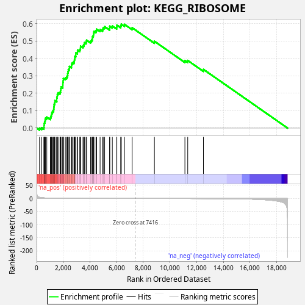
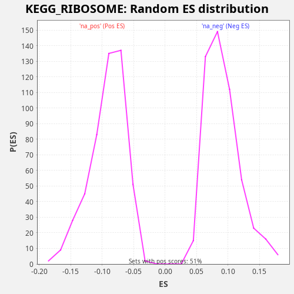

| Dataset | TCGA |
| Phenotype | NoPhenotypeAvailable |
| Upregulated in class | na_pos |
| GeneSet | KEGG_RIBOSOME |
| Enrichment Score (ES) | 0.5961885 |
| Normalized Enrichment Score (NES) | 6.5454946 |
| Nominal p-value | 0.0 |
| FDR q-value | 0.0 |
| FWER p-Value | 0.0 |

| SYMBOL | RANK IN GENE LIST | RANK METRIC SCORE | RUNNING ES | CORE ENRICHMENT | |
|---|---|---|---|---|---|
| 1 | RPL3 | 219 | 4.474 | -0.0002 | Yes |
| 2 | RPL4 | 384 | 3.175 | 0.0025 | Yes |
| 3 | RPL34 | 553 | 2.438 | 0.0051 | Yes |
| 4 | RPL10A | 560 | 2.414 | 0.0162 | Yes |
| 5 | RPS2 | 566 | 2.402 | 0.0275 | Yes |
| 6 | RPS23 | 604 | 2.235 | 0.0370 | Yes |
| 7 | RPL13A | 639 | 2.125 | 0.0467 | Yes |
| 8 | RPL27A | 661 | 2.049 | 0.0570 | Yes |
| 9 | RPLP0 | 764 | 1.777 | 0.0631 | Yes |
| 10 | RPLP1 | 1032 | 1.310 | 0.0603 | Yes |
| 11 | RPS8 | 1082 | 1.234 | 0.0692 | Yes |
| 12 | RPSA | 1115 | 1.196 | 0.0790 | Yes |
| 13 | RPL13 | 1148 | 1.154 | 0.0888 | Yes |
| 14 | RPL10 | 1194 | 1.091 | 0.0979 | Yes |
| 15 | RPS18 | 1275 | 0.992 | 0.1051 | Yes |
| 16 | RPL14 | 1287 | 0.973 | 0.1160 | Yes |
| 17 | RPL29 | 1303 | 0.959 | 0.1267 | Yes |
| 18 | RPL15 | 1319 | 0.942 | 0.1374 | Yes |
| 19 | RPS11 | 1362 | 0.915 | 0.1466 | Yes |
| 20 | RPS4X | 1372 | 0.908 | 0.1577 | Yes |
| 21 | RPS9 | 1512 | 0.806 | 0.1617 | Yes |
| 22 | RPL37A | 1513 | 0.806 | 0.1732 | Yes |
| 23 | RPS12 | 1541 | 0.785 | 0.1833 | Yes |
| 24 | RPL28 | 1555 | 0.775 | 0.1941 | Yes |
| 25 | RPL18 | 1610 | 0.735 | 0.2027 | Yes |
| 26 | RPL9 | 1756 | 0.645 | 0.2064 | Yes |
| 27 | RPS3A | 1797 | 0.626 | 0.2158 | Yes |
| 28 | RPL6 | 1809 | 0.618 | 0.2267 | Yes |
| 29 | RSL24D1 | 1832 | 0.610 | 0.2370 | Yes |
| 30 | RPL12 | 1963 | 0.549 | 0.2416 | Yes |
| 31 | RPL24 | 1969 | 0.547 | 0.2528 | Yes |
| 32 | RPL5 | 1976 | 0.543 | 0.2640 | Yes |
| 33 | RPS3 | 1999 | 0.532 | 0.2743 | Yes |
| 34 | RPS17 | 2006 | 0.530 | 0.2855 | Yes |
| 35 | RPL22L1 | 2155 | 0.467 | 0.2891 | Yes |
| 36 | RPS26 | 2264 | 0.431 | 0.2948 | Yes |
| 37 | RPS5 | 2316 | 0.415 | 0.3036 | Yes |
| 38 | RPL31 | 2333 | 0.410 | 0.3142 | Yes |
| 39 | RPL39 | 2354 | 0.402 | 0.3246 | Yes |
| 40 | RPL22 | 2375 | 0.396 | 0.3351 | Yes |
| 41 | RPS20 | 2446 | 0.374 | 0.3428 | Yes |
| 42 | RPS13 | 2458 | 0.371 | 0.3537 | Yes |
| 43 | RPL23 | 2610 | 0.323 | 0.3572 | Yes |
| 44 | FAU | 2621 | 0.320 | 0.3681 | Yes |
| 45 | RPS15A | 2687 | 0.302 | 0.3761 | Yes |
| 46 | RPL19 | 2801 | 0.273 | 0.3816 | Yes |
| 47 | RPS6 | 2831 | 0.265 | 0.3915 | Yes |
| 48 | RPL18A | 2860 | 0.259 | 0.4015 | Yes |
| 49 | RPL36 | 2870 | 0.256 | 0.4126 | Yes |
| 50 | RPL17 | 2939 | 0.247 | 0.4204 | Yes |
| 51 | RPLP2 | 2941 | 0.246 | 0.4319 | Yes |
| 52 | RPL26 | 3061 | 0.224 | 0.4370 | Yes |
| 53 | RPL36AL | 3071 | 0.222 | 0.4480 | Yes |
| 54 | RPS15 | 3236 | 0.195 | 0.4508 | Yes |
| 55 | RPS25 | 3287 | 0.189 | 0.4596 | Yes |
| 56 | RPS4Y1 | 3297 | 0.187 | 0.4706 | Yes |
| 57 | RPL41 | 3479 | 0.159 | 0.4724 | Yes |
| 58 | RPL11 | 3552 | 0.149 | 0.4801 | Yes |
| 59 | RPS24 | 3583 | 0.145 | 0.4900 | Yes |
| 60 | RPS29 | 3709 | 0.131 | 0.4948 | Yes |
| 61 | RPL23A | 3747 | 0.127 | 0.5043 | Yes |
| 62 | RPS7 | 4048 | 0.097 | 0.4998 | Yes |
| 63 | RPS10 | 4132 | 0.091 | 0.5069 | Yes |
| 64 | RPL26L1 | 4177 | 0.088 | 0.5160 | Yes |
| 65 | RPL37 | 4199 | 0.086 | 0.5264 | Yes |
| 66 | RPS19 | 4259 | 0.082 | 0.5347 | Yes |
| 67 | RPL36A | 4275 | 0.081 | 0.5454 | Yes |
| 68 | RPL35A | 4300 | 0.079 | 0.5556 | Yes |
| 69 | RPL8 | 4453 | 0.068 | 0.5590 | Yes |
| 70 | RPL27 | 4500 | 0.065 | 0.5680 | Yes |
| 71 | RPS28 | 4760 | 0.050 | 0.5657 | Yes |
| 72 | RPS27L | 4946 | 0.040 | 0.5673 | Yes |
| 73 | RPL7 | 4994 | 0.038 | 0.5763 | Yes |
| 74 | RPL38 | 5102 | 0.033 | 0.5821 | Yes |
| 75 | RPS27A | 5476 | 0.021 | 0.5737 | Yes |
| 76 | RPS21 | 5485 | 0.021 | 0.5847 | Yes |
| 77 | RPL7A | 5679 | 0.016 | 0.5859 | Yes |
| 78 | RPL21 | 6010 | 0.010 | 0.5798 | Yes |
| 79 | RPS27 | 6017 | 0.010 | 0.5910 | Yes |
| 80 | RPS16 | 6304 | 0.006 | 0.5872 | Yes |
| 81 | RPL30 | 6352 | 0.005 | 0.5962 | Yes |
| 82 | UBA52 | 6587 | 0.003 | 0.5952 | No |
| 83 | RPL32 | 7163 | 0.000 | 0.5760 | No |
| 84 | RPL35 | 8834 | -0.010 | 0.4983 | No |
| 85 | RPL10L | 11120 | -0.099 | 0.3878 | No |
| 86 | MRPL13 | 11331 | -0.113 | 0.3881 | No |
| 87 | RPL3L | 12509 | -0.252 | 0.3368 | No |

{kind=link}
{kind=link}